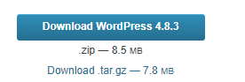
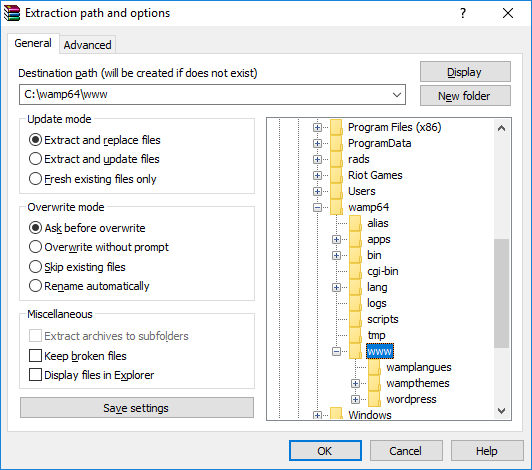
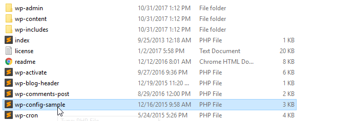

Hva er Wordpress?
WordPress er et publiseringsverktøy for å lage nettsider/blogger, som er laget av PHP-filer (med PHP-koder), men du trenger ikke å kunne noe programmering eller koding, med mindre du ønsker å tilrettelegge WordPress etter dine ønsker. WordPress finnes i to utgaver: WordPress.com kjøres direkte i nettleseren, og trenger ingen installasjon. WordPress.org kan installes på webhotell, din egen PC, eller på en hvilken som helst lagringsenhet. Du bestemmer selv hvor enkelt eller hvor komplisert du ønsker å ha WordPress
Hvordan installere Wordpress?
For å installere Wordpress må du gå til nettsiden til Wordpress
Her
Naviger deg til høyre på siden og trykk på download

Åpne zip filen og pakk den ut til der du la Wamp mappen din og under wamp/www

Naviger den til wordpress mappen og finn filen wp-config-sample.php

Åpne filen og bla til du finner database_name_here - username_here og password_here
database_name_here skal byttes til det du kalte databasen "wordpress"
username_here skal byttes til brukernavnet du satt "root"
password_here kan settes til det du satte eller ingeting altså ""
Nå må du fjerne -sample fra filnavnet. Filnavnet skal altså være wp-config.php
Hvis alt er gjort riktig kan du gå til localhost/wordpress i nettleseren din og du kan logge inn og sette opp en side